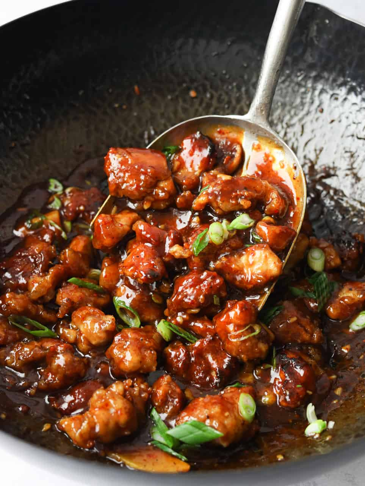

Back to Home
Let's cook a delicious General Tso's Chicken!

Brings back memories..
Ingredients:
- 1 lb boneless, skinless chicken thighs, cut into bite-sized pieces
- 1/2 cup cornstarch
- 2 eggs, beaten
- 1/4 cup vegetable oil (for frying)
- 2 cloves garlic, minced
- 1 tsp ginger, minced
- 1/4 cup soy sauce
- 1/4 cup rice vinegar
- 3 tbsp hoisin sauce
- 2 tbsp sugar
- 1/2 cup chicken broth
- 1 tbsp cornstarch mixed with 2 tbsp water (slurry)
- 1/4 tsp red pepper flakes (optional)
- Sliced green onions and sesame seeds for garnish
Instructions:
- In a bowl, coat the chicken pieces with cornstarch, then dip them into the beaten eggs.
- Heat vegetable oil in a large skillet or wok over medium-high heat. Fry the chicken pieces in batches until golden brown and cooked through. Remove and drain on paper towels.
- In the same skillet, remove excess oil, leaving about 1 tbsp. Add minced garlic and ginger, sauté for about 30 seconds until fragrant.
- In a bowl, mix soy sauce, rice vinegar, hoisin sauce, sugar, and chicken broth. Pour this mixture into the skillet and bring to a simmer.
- Add the cornstarch slurry to the sauce and stir until it thickens. If you like it spicy, add red pepper flakes.
- Return the fried chicken to the skillet and toss to coat with the sauce.
- Garnish with sliced green onions and sesame seeds before serving. Enjoy your General Tso's Chicken!